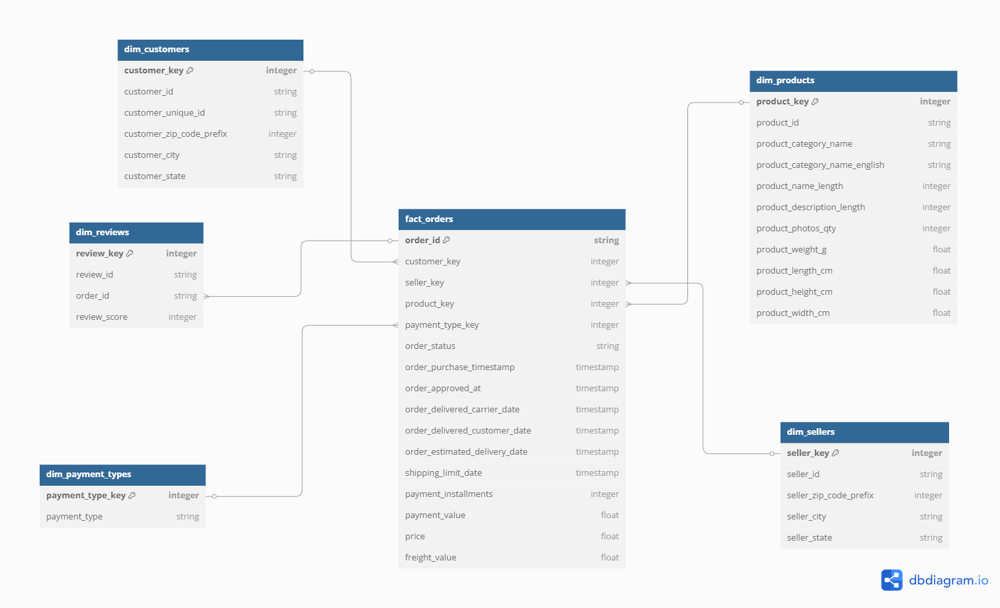

A Comprehensive Data Engineering Solution
Modular design enables independent scaling of extraction, transformation, and loading processes while maintaining a unified workflow through the Streamlit interface.
Interactive web interface provides real-time visibility into pipeline execution with progress bars and status indicators for each step of the ETL process.

E-Commerce Star Schema with fact_orders as the central fact table
Implemented robust data validation, cleansing routines, and a modular architecture that allows for targeted error handling and component reuse.